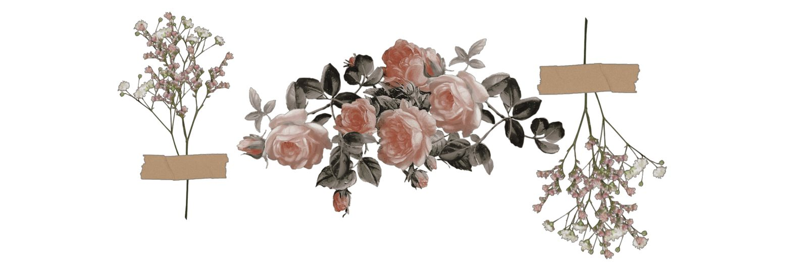
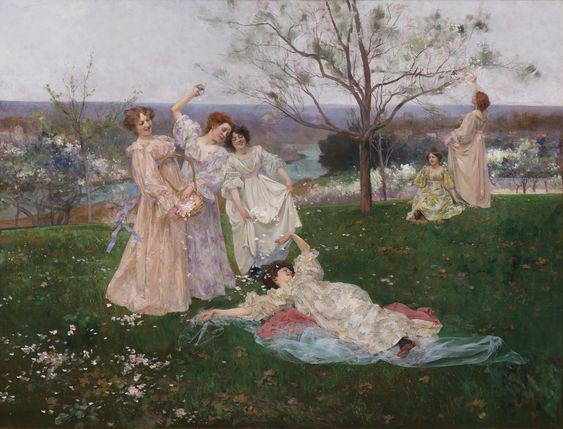
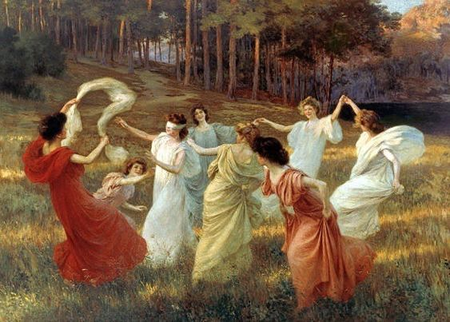
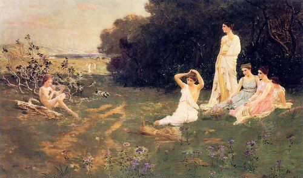

INICIO
CUESTIONARIO
(current)
BECAS
MAESTRAS
MULTIMEDIA
(current)
INSTALACIONES
BUSCAR
Las 9 musas del arte
Becas y programas

Academicas

"Musa talentosa"
Las becas académicas valoran los méritos académicos, es decir,
es una oportunidad para aquellos que tengan una buena reputación
estudiantil y que posean calificaciones altas. La institución financiadora
es quien decide la cuantía de la ayuda en función de múltiples elementos,
dentro de los que se incluye el expediente académico. Es una excelente opción
para quienes no poseen competencias deportivas, pero sí cuentan con altas
calificaciones de estudio.
100% DE BECA
La institucion cubre todos los gatos de matricula del alumno
80% DE BECA
El alumno debe pagar el 20% de su matricula
60% DE BECA
El alumno debe pagar el 40% de su matricula
y ayudar en diversos eventos como staff para
la institucion

"Musa soñadora"
Esta clase de beca tiene viaje al extranjero, se da a los alumnos mas
sobresaientes en su campo. No se necesita tener un promedio perfecto sin
embargo es parte del proceso. Las maestras hacen una seleccion de quien
incluir en este viaje
100% DE BECA
La institucion cubre todos los gatos de matricula del alumno
asi como los gastos de viaje escolares
80% DE BECA
El alumno debe pagar el 20% de su matricula
Asi como ayudar en diversos eventos como staff
para la institucion

"Musa innovadora"
Pese a que entra al campo de becas no es mas que una ayuda con tus
practicas de tranajo. La institsuin te da un lugar seguro donde trabajar
tus horas en un proceso mas rapido y menos laborioso que por mano propia
en editoriales e imprentas regularmente.
Su navegador no soporta contenido multimedia.
Deportivas
Deportivas
El deporte tiene mucha importancia y alcance, por lo que las
personas con aptitudes sobresalientes en el área cuentan con
amplias posibilidades para desarrollarse. Las becas
deportivas ayudan a que los estudiantes puedas compaginar sus estudios
académicos con sus carreras profesionales. Es permitido que mantengan
sus entrenamientos y competencias sin problemas, ya que suelen representar
a la universidad en la disciplina a la que pertenezcan.
100% DE BECA
La institucion cubre todos los gatos de matricula del alumno
80% DE BECA
El alumno debe pagar el 20% de su matricula
60% DE BECA
El alumno debe pagar el 40% de su matricula
y ayudar en diversos eventos como staff para
la institucion.
Su navegador no soporta contenido multimedia.
Requisitos generales para calificar a una beca
Encuentra tu hogar
Completar los estudios de bachillerato.
El estudiante tiene que haber culminado sus estudios
de bachillerato, preferiblemente sin reprobar o repetir algún curso.
Para las becas académicas se exigen notas altas y para las becas
deportivas hay que tener excelentes habilidades en deporte.
Aprobar los exámenes de admisión.
Para entrar en una universidad de los Estados Unidos mediante un
programa de beca, es primordial aprobar los exámenes SAP y TOEFL.
Aquí se evalúan los conocimientos generales del candidato y el nivel de inglés.
Referencias positivas.
Las referencias académicas o las recomendaciones profesionales pueden aumentar
las oportunidades de ser aceptado como becario.
Ensayo sustentado.
El aspirante debe presentar un ensayo donde realce los motivos que lo convierten en
la mejor opción para la institución. Para ello, puede indicar sus logros y aptitudes.
Aparte de los puntos mencionados, hay otros elementos más específicos que también se pueden
evaluar en el proceso de admisión de un becario.